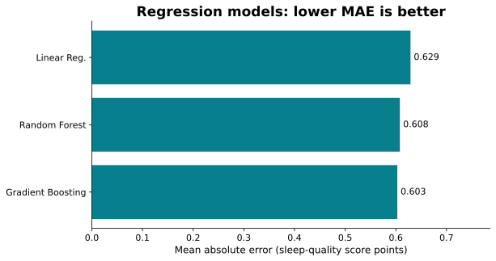
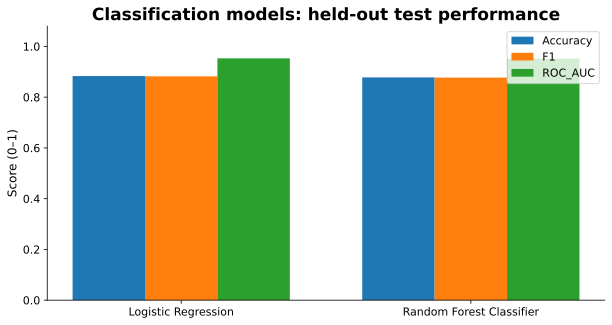

What the models predict
Regression: predict the numeric sleep quality score. Classification: predict whether a record's score is at or above the training-set median (6.25). This is a dataset-defined split, not a medical diagnosis or validated clinical threshold.
All models use the same 80/20 held-out split (random state 42). Inputs exclude user ID and the target; categorical variables are one-hot encoded. Standardization is applied to linear/logistic models. Model results below were computed on the provided 15,000-row CSV.
Regression model comparison

| Model | MAE ↓ | R² ↑ |
|---|---|---|
| Linear Regression | 0.629 | 0.781 |
| Random Forest Regressor | 0.608 | 0.797 |
| Gradient Boosting Regressor | 0.603 | 0.802 |
MAE measures average absolute error in score points. R² describes explained variance on unseen test records.
Classification model comparison

| Model | Accuracy | F1 | ROC AUC |
|---|---|---|---|
| Logistic Regression | 0.883 | 0.882 | 0.953 |
| Random Forest Classifier | 0.878 | 0.877 | 0.952 |
These metrics evaluate a threshold-defined category, not the original numeric score. Do not directly compare classification accuracy with regression R².
Research limitations
Predictive performance is not evidence of causation. The data includes occupations beyond students, and the label “Student” does not verify college enrollment. Results depend on the provided dataset and its unknown sampling provenance. The original Kaggle notebook's modeling choices should be distinguished from these newly trained comparisons.